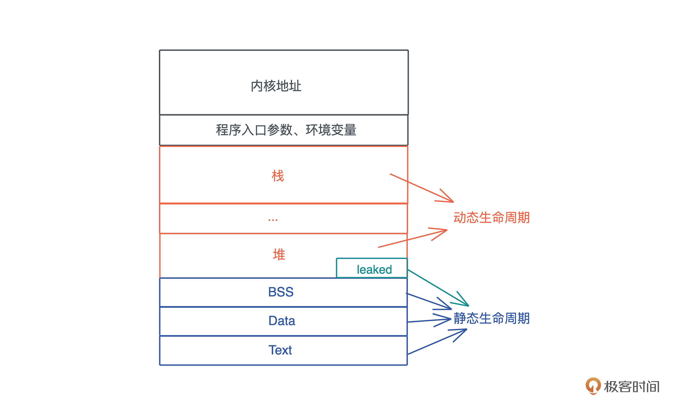
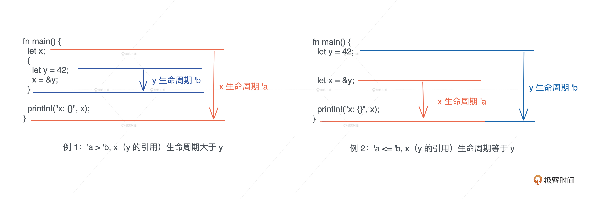
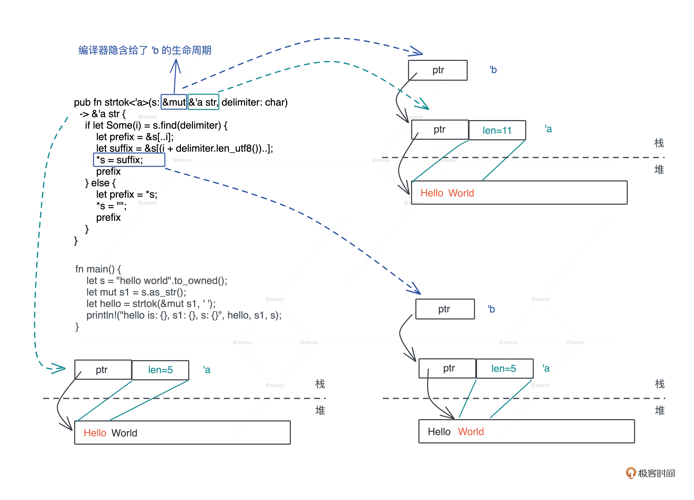

- 00 开篇词 让Rust成为你的下一门主力语言.md
- 01 内存：值放堆上还是放栈上，这是一个问题.md
- 02 串讲：编程开发中，那些你需要掌握的基本概念.md
- 03 初窥门径：从你的第一个Rust程序开始！.md
- 04 get hands dirty：来写个实用的CLI小工具.md
- 05 get hands dirty：做一个图片服务器有多难？.md
- 06 get hands dirty：SQL查询工具怎么一鱼多吃？.md
- 07 所有权：值的生杀大权到底在谁手上？.md
- 08 所有权：值的借用是如何工作的？.md
- 09 所有权：一个值可以有多个所有者么？.md
- 10 生命周期：你创建的值究竟能活多久？.md
- 11 内存管理：从创建到消亡，值都经历了什么？.md
- 12 类型系统：Rust的类型系统有什么特点？.md
- 13 类型系统：如何使用trait来定义接口？.md
- 14 类型系统：有哪些必须掌握的trait？.md
- 15 数据结构：这些浓眉大眼的结构竟然都是智能指针？.md
- 16 数据结构：Vec_T、&[T]、Box[T]_ ，你真的了解集合容器么？.md
- 17 数据结构：软件系统核心部件哈希表，内存如何布局？.md
- 18 错误处理：为什么Rust的错误处理与众不同？.md
- 19 闭包：FnOnce、FnMut和Fn，为什么有这么多类型？.md
- 20 4 Steps ：如何更好地阅读Rust源码？.md
- 21 阶段实操（1）：构建一个简单的KV server-基本流程.md
- 22 阶段实操（2）：构建一个简单的KV server-基本流程.md
- 23 类型系统：如何在实战中使用泛型编程？.md
- 24 类型系统：如何在实战中使用trait object？.md
- 25 类型系统：如何围绕trait来设计和架构系统？.md
- 26 阶段实操（3）：构建一个简单的KV server-高级trait技巧.md
- 27 生态系统：有哪些常有的Rust库可以为我所用？.md
- 28 网络开发（上）：如何使用Rust处理网络请求？.md
- 29 网络开发（下）：如何使用Rust处理网络请求？.md
- 30 Unsafe Rust：如何用C++的方式打开Rust？.md
- 31 FFI：Rust如何和你的语言架起沟通桥梁？.md
- 32 实操项目：使用PyO3开发Python3模块.md
- 33 并发处理（上）：从atomics到Channel，Rust都提供了什么工具？.md
- 34 并发处理（下）：从atomics到Channel，Rust都提供了什么工具？.md
- 35 实操项目：如何实现一个基本的MPSC channel？.md
- 36 阶段实操（4）：构建一个简单的KV server-网络处理.md
- 37 阶段实操（5）：构建一个简单的KV server-网络安全.md
- 38 异步处理：Future是什么？它和async_await是什么关系？.md
- 39 异步处理：async_await内部是怎么实现的？.md
- 40 异步处理：如何处理异步IO？.md
- 41 阶段实操（6）：构建一个简单的KV server-异步处理.md
- 42 阶段实操（7）：构建一个简单的KV server-如何做大的重构？.md
- 43 生产环境：真实世界下的一个Rust项目包含哪些要素？.md
- 44 数据处理：应用程序和数据如何打交道？.md
- 45 阶段实操（8）：构建一个简单的KV server-配置_测试_监控_CI_CD.md
- 46 软件架构：如何用Rust架构复杂系统？.md
- 加餐 Rust2021版次问世了！.md
- 加餐 代码即数据：为什么我们需要宏编程能力？.md
- 加餐 宏编程（上）：用最“笨”的方式撰写宏.md
- 加餐 宏编程（下）：用 syn_quote 优雅地构建宏.md
- 加餐 愚昧之巅：你的Rust学习常见问题汇总.md
- 加餐 期中测试：参考实现讲解.md
- 加餐 期中测试：来写一个简单的grep命令行.md
- 加餐 这个专栏你可以怎么学，以及Rust是否值得学？.md
- 大咖助场 开悟之坡（上）：Rust的现状、机遇与挑战.md
- 大咖助场 开悟之坡（下）：Rust的现状、机遇与挑战.md
- 特别策划 学习锦囊（一）：听听课代表们怎么说.md
- 特别策划 学习锦囊（三）：听听课代表们怎么说.md
- 特别策划 学习锦囊（二）：听听课代表们怎么说.md
- 用户故事 绝望之谷：改变从学习开始.md
- 用户故事 语言不仅是工具，还是思维方式.md
- 结束语 永续之原：Rust学习，如何持续精进？.md
10 生命周期：你创建的值究竟能活多久？
你好，我是陈天。
之前提到过，在任何语言里，栈上的值都有自己的生命周期，它和帧的生命周期一致，而 Rust，进一步明确这个概念，并且为堆上的内存也引入了生命周期。
我们知道，在其它语言中，堆内存的生命周期是不确定的，或者是未定义的。因此，要么开发者手工维护，要么语言在运行时做额外的检查。而在 Rust 中，除非显式地做 Box::leak()/Box::into_raw()/ManualDrop 等动作，一般来说，堆内存的生命周期，会默认和其栈内存的生命周期绑定在一起。
所以在这种默认情况下，在每个函数的作用域中，编译器就可以对比值和其引用的生命周期，来确保“引用的生命周期不超出值的生命周期”。
那你有没有想过，Rust 编译器是如何做到这一点的呢？
值的生命周期
在进一步讨论之前，我们先给值可能的生命周期下个定义。
如果一个值的生命周期贯穿整个进程的生命周期，那么我们就称这种生命周期为静态生命周期。
当值拥有静态生命周期，其引用也具有静态生命周期。我们在表述这种引用的时候，可以用 'static 来表示。比如： &'static str 代表这是一个具有静态生命周期的字符串引用。
一般来说，全局变量、静态变量、字符串字面量（string literal）等，都拥有静态生命周期。我们上文中提到的堆内存，如果使用了 Box::leak 后，也具有静态生命周期。
如果一个值是在某个作用域中定义的，也就是说它被创建在栈上或者堆上，那么其生命周期是动态的。
当这个值的作用域结束时，值的生命周期也随之结束。对于动态生命周期，我们约定用 'a 、'b 或者 'hello 这样的小写字符或者字符串来表述。 ' 后面具体是什么名字不重要，它代表某一段动态的生命周期，其中， &'a str 和 &'b str 表示这两个字符串引用的生命周期可能不一致。
我们通过图总结一下：-

- 分配在堆和栈上的内存有其各自的作用域，它们的生命周期是动态的。
- 全局变量、静态变量、字符串字面量、代码等内容，在编译时，会被编译到可执行文件中的 BSS/Data/RoData/Text 段，然后在加载时，装入内存。因而，它们的生命周期和进程的生命周期一致，所以是静态的。
- 所以，函数指针的生命周期也是静态的，因为函数在 Text 段中，只要进程活着，其内存一直存在。
明白了这些基本概念后，我们来看对于值和引用，编译器是如何识别其生命周期的。
编译器如何识别生命周期
我们先从两个最基本最简单的例子开始。
左图的例1 ，x 引用了在内层作用域中创建出来的变量 y。由于，变量从开始定义到其作用域结束的这段时间，是它的生命周期，所以 x 的生命周期 ‘a 大于 y 的生命周期 ‘b，当 x 引用 y 时，编译器报错。
右图例 2 中，y 和 x 处在同一个作用域下， x 引用了 y，我们可以看到 x 的生命周期 ‘a 和 y 的生命周期 ‘b 几乎同时结束，或者说 ‘a 小于等于 ‘b，所以，x 引用 y 是可行的。

这两个小例子很好理解，我们再看个稍微复杂一些的。
示例代码在 main() 函数里创建了两个 String，然后将其传入 max() 函数比较大小。max() 函数接受两个字符串引用，返回其中较大的那个字符串的引用（示例代码）：
fn main() {
let s1 = String::from("Lindsey");
let s2 = String::from("Rosie");
let result = max(&s1, &s2);
println!("bigger one: {}", result);
}
fn max(s1: &str, s2: &str) -> &str {
if s1 > s2 {
s1
} else {
s2
}
}
这段代码是无法编译通过的，它会报错 “missing lifetime specifier” ，也就是说，编译器在编译 max() 函数时，无法判断 s1、s2 和返回值的生命周期。
你是不是很疑惑，站在我们开发者的角度，这个代码理解起来非常直观，在 main() 函数里 s1 和 s2 两个值生命周期一致，它们的引用传给 max() 函数之后，无论谁的被返回，生命周期都不会超过 s1 或 s2。所以这应该是一段正确的代码啊？
为什么编译器报错了，不允许它编译通过呢？我们把这段代码稍微扩展一下，你就能明白编译器的困惑了。
在刚才的示例代码中，我们创建一个新的函数 get_max()，它接受一个字符串引用，然后和 “Cynthia” 这个字符串字面量比较大小。之前我们提到，字符串字面量的生命周期是静态的，而 s1 是动态的，它们的生命周期显然不一致（代码）：
fn main() {
let s1 = String::from("Lindsey");
let s2 = String::from("Rosie");
let result = max(&s1, &s2);
println!("bigger one: {}", result);
let result = get_max(&s1);
println!("bigger one: {}", result);
}
fn get_max(s1: &str) -> &str {
max(s1, "Cynthia")
}
fn max(s1: &str, s2: &str) -> &str {
if s1 > s2 {
s1
} else {
s2
}
}
当出现了多个参数，它们的生命周期可能不一致时，返回值的生命周期就不好确定了。编译器在编译某个函数时，并不知道这个函数将来有谁调用、怎么调用，所以，函数本身携带的信息，就是编译器在编译时使用的全部信息。
根据这一点，我们再看示例代码，在编译 max() 函数时，参数 s1 和 s2 的生命周期是什么关系、返回值和参数的生命周期又有什么关系，编译器是无法确定的。
此时，就需要我们在函数签名中提供生命周期的信息，也就是生命周期标注（lifetime specifier）。在生命周期标注时，使用的参数叫生命周期参数（lifetime parameter）。通过生命周期标注，我们告诉编译器这些引用间生命周期的约束。
生命周期参数的描述方式和泛型参数一致，不过只使用小写字母。这里，两个入参 s1、 s2，以及返回值都用 'a 来约束。生命周期参数，描述的是参数和参数之间、参数和返回值之间的关系，并不改变原有的生命周期。
在我们添加了生命周期参数后，s1 和 s2 的生命周期只要大于等于（outlive） 'a，就符合参数的约束，而返回值的生命周期同理，也需要大于等于 'a 。
在你运行上述示例代码的时候，编译器已经提示你，可以这么修改 max() 函数：
fn max<'a>(s1: &'a str, s2: &'a str) -> &'a str {
if s1 > s2 {
s1
} else {
s2
}
}
当 main() 函数调用 max() 函数时，s1 和 s2 有相同的生命周期 'a ，所以它满足 (s1: &'a str, s2: &'a str) 的约束。当 get_max() 函数调用 max() 时，“Cynthia” 是静态生命周期，它大于 s1 的生命周期'a ，所以它也可以满足 max() 的约束需求。
你的引用需要额外标注吗
学到这里，你可能会有困惑了：为什么我之前写的代码，很多函数的参数或者返回值都使用了引用，编译器却没有提示我要额外标注生命周期呢？
这是因为编译器希望尽可能减轻开发者的负担，其实所有使用了引用的函数，都需要生命周期的标注，只不过编译器会自动做这件事，省却了开发者的麻烦。
比如这个例子，first() 函数接受一个字符串引用，找到其中的第一个单词并返回（代码）：
fn main() {
let s1 = "Hello world";
println!("first word of s1: {}", first(&s1));
}
fn first(s: &str) -> &str {
let trimmed = s.trim();
match trimmed.find(' ') {
None => "",
Some(pos) => &trimmed[..pos],
}
}
虽然我们没有做任何生命周期的标注，但编译器会通过一些简单的规则为函数自动添加标注：
- 所有引用类型的参数都有独立的生命周期
'a、'b等。 - 如果只有一个引用型输入，它的生命周期会赋给所有输出。
- 如果有多个引用类型的参数，其中一个是 self，那么它的生命周期会赋给所有输出。
规则 3 适用于 trait 或者自定义数据类型，我们先放在一边，以后遇到会再详细讲的。例子中的 first() 函数通过规则 1 和 2，可以得到一个带生命周期的版本（代码）：
fn first<'a>(s: &'a str) -> &'a str {
let trimmed = s.trim();
match trimmed.find(' ') {
None => "",
Some(pos) => &trimmed[..pos],
}
}
你可以看到，所有引用都能正常标注，没有冲突。那么对比之前返回较大字符串的示例代码（示例代码）， max() 函数为什么编译器无法处理呢？
按照规则 1， 我们可以对max() 函数的参数 s1 和 s2 分别标注'a 和'b ，但是返回值如何标注？是 'a 还是'b 呢？这里的冲突，编译器无能为力。
fn max<'a, 'b>(s1: &'a str, s2: &'b str) -> &'??? str
所以，只有我们明白了代码逻辑，才能正确标注参数和返回值的约束关系，顺利编译通过。
引用标注小练习
好，Rust的生命周期这个知识点我们就讲完了，接下来我们来尝试写一个字符串分割函数strtok()，即时练习一下，如何加引用标注。
相信有过 C/C++ 经验的开发者都接触过这个strtok()函数，它会把字符串按照分隔符（delimiter）切出一个 token 并返回，然后将传入的字符串引用指向后续的 token。
用 Rust 实现并不困难，由于传入的 s 需要可变的引用，所以它是一个指向字符串引用的可变引用 &mut &str（练习代码）：
pub fn strtok(s: &mut &str, delimiter: char) -> &str {
if let Some(i) = s.find(delimiter) {
let prefix = &s[..i];
// 由于 delimiter 可以是 utf8，所以我们需要获得其 utf8 长度，
// 直接使用 len 返回的是字节长度，会有问题
let suffix = &s[(i + delimiter.len_utf8())..];
*s = suffix;
prefix
} else { // 如果没找到，返回整个字符串，把原字符串指针 s 指向空串
let prefix = *s;
*s = "";
prefix
}
}
fn main() {
let s = "hello world".to_owned();
let mut s1 = s.as_str();
let hello = strtok(&mut s1, ' ');
println!("hello is: {}, s1: {}, s: {}", hello, s1, s);
}
当我们尝试运行这段代码时，会遇到生命周期相关的编译错误。类似刚才讲的示例代码，是因为按照编译器的规则， &mut &str 添加生命周期后变成 &'b mut &'a str，这将导致返回的 '&str 无法选择一个合适的生命周期。
要解决这个问题，我们首先要思考一下：返回值和谁的生命周期有关？是指向字符串引用的可变引用 &mut ，还是字符串引用 &str 本身？
显然是后者。所以，我们可以为 strtok 添加生命周期标注：
pub fn strtok<'b, 'a>(s: &'b mut &'a str, delimiter: char) -> &'a str {...}
因为返回值的生命周期跟字符串引用有关，我们只为这部分的约束添加标注就可以了，剩下的标注交给编译器自动添加，所以代码也可以简化成如下这样，让编译器将其扩展成上面的形式：
pub fn strtok<'a>(s: &mut &'a str, delimiter: char) -> &'a str {...}
最终，正常工作的代码如下（练习代码_改），可以通过编译：
pub fn strtok<'a>(s: &mut &'a str, delimiter: char) -> &'a str {
if let Some(i) = s.find(delimiter) {
let prefix = &s[..i];
let suffix = &s[(i + delimiter.len_utf8())..];
*s = suffix;
prefix
} else {
let prefix = *s;
*s = "";
prefix
}
}
fn main() {
let s = "hello world".to_owned();
let mut s1 = s.as_str();
let hello = strtok(&mut s1, ' ');
println!("hello is: {}, s1: {}, s: {}", hello, s1, s);
}
为了帮助你更好地理解这个函数的生命周期关系，我将每个堆上和栈上变量的关系画了个图供你参考。

这里跟你分享一个小技巧：如果你觉得某段代码理解或者分析起来很困难，也可以画类似的图，从最基础的数据在堆和栈上的关系开始想，就很容易厘清脉络。
在处理生命周期时，编译器会根据一定规则自动添加生命周期的标注。然而，当自动标注产生冲突时，需要我们手工标注。
生命周期标注的目的是，在参数和返回值之间建立联系或者约束。调用函数时，传入的参数的生命周期需要大于等于（outlive）标注的生命周期。
当每个函数都添加好生命周期标注后，编译器，就可以从函数调用的上下文中分析出，在传参时，引用的生命周期，是否和函数签名中要求的生命周期匹配。如果不匹配，就违背了“引用的生命周期不能超出值的生命周期”，编译器就会报错。
如果你搞懂了函数的生命周期标注，那么数据结构的生命周期标注也是类似。比如下面的例子，Employee 的 name 和 title 是两个字符串引用，Employee 的生命周期不能大于它们，否则会访问失效的内存，因而我们需要妥善标注：
struct Employee<'a, 'b> {
name: &'a str,
title: &'b str,
age: u8,
}
使用数据结构时，数据结构自身的生命周期，需要小于等于其内部字段的所有引用的生命周期。
小结
今天我们介绍了静态生命周期和动态生命周期的概念，以及编译器如何识别值和引用的生命周期。- - 根据所有权规则，值的生命周期可以确认，它可以一直存活到所有者离开作用域；而引用的生命周期不能超过值的生命周期。在同一个作用域下，这是显而易见的。然而，当发生函数调用时，编译器需要通过函数的签名来确定，参数和返回值之间生命周期的约束。
大多数情况下，编译器可以通过上下文中的规则，自动添加生命周期的约束。如果无法自动添加，则需要开发者手工来添加约束。一般，我们只需要确定好返回值和哪个参数的生命周期相关就可以了。而对于数据结构，当内部有引用时，我们需要为引用标注生命周期。
思考题
如果我们把 strtok() 函数的签名写成这样，会发生什么问题？为什么它会发生这个问题？你可以试着编译一下看看。
pub fn strtok<‘a>(s: &‘a mut &str, delimiter: char) -> &‘a str {…}
回顾[第 6 讲SQL查询工具]的代码，现在，看看你是不是对代码中的生命周期标注有了更深理解？
感谢你的收听，你已经打卡 Rust 学习10次啦！
如果你觉得有收获，也欢迎你分享给你身边的朋友，邀他一起讨论。坚持学习，我们下节课见。
参考资料
栈上的内存不必特意释放，顶多是编译时编译器不再允许该变量被访问。因为栈上的内存会随着栈帧的结束而结束。如果你有点模糊，可以再看看[前置知识]，温习一下栈和堆。
Rust 的 I/O 安全性目前是 “almost safety”，为什么不是完全安全，感兴趣的同学可以看这个 RFC。
Rust 的生命周期管理一直在进化，进化方向是在常见的场景下，尽量避免因为生命周期的处理，代码不得不换成不那么容易阅读的写作方式。比如下面的代码：
use std::collections::HashMap;
fn main() {
let mut map = HashMap::new(); map.insert("hello", "world"); let key = "hello1"; // 按照之前的说法，这段代码无法编译通过，因为同一个 scope 下不能有两个可变引用 // 但因为 RFC2094 non-lexical lifetimes，Rust 编译器可以处理这个场景， // 因为当 None 时，map.get_mut() 的引用实际已经结束 match map.get_mut(key) /* <----- 可变引用的生命周期一直持续到 match 结果 */ { Some(v) => do_something(v), None => { map.insert(key, "tyr"); // <--- 这里又获得了一个可变引用 } }}
fn do_something(_v: &mut &str) {
todo!()}
如果你对此感兴趣，想了解更多，可以参看：RFC2094 - Non-lexical lifetimes。我们在平时写代码时，可以就像这段代码这样先按照正常的方式去写，如果编译器抱怨，再分析引用的生命周期，换个写法。此外，随时保持你的 Rust 版本是最新的，也有助于让你的代码总是可以使用最简单的方式撰写。
© 2019 - 2023 Liangliang Lee. Powered by gin and hexo-theme-book.